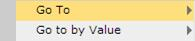
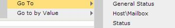
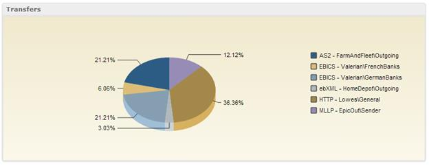

To change the chart category:
- Right-click on any label in the legend. The following menu will appear:

- Expand the Go To submenu by hovering over the label. The
following menu will appear:

- The submenu items General Status,
Host\Mailbox, and Status are the possible
options for the new categorization. When an item is selected the chart will be redrawn
with a new categorization. In the example below, the category has been reclassified to
Host\Mailbox. Compare this chart to the original (see Summary Dashboard Transfers Pie Chart) to see the difference.
